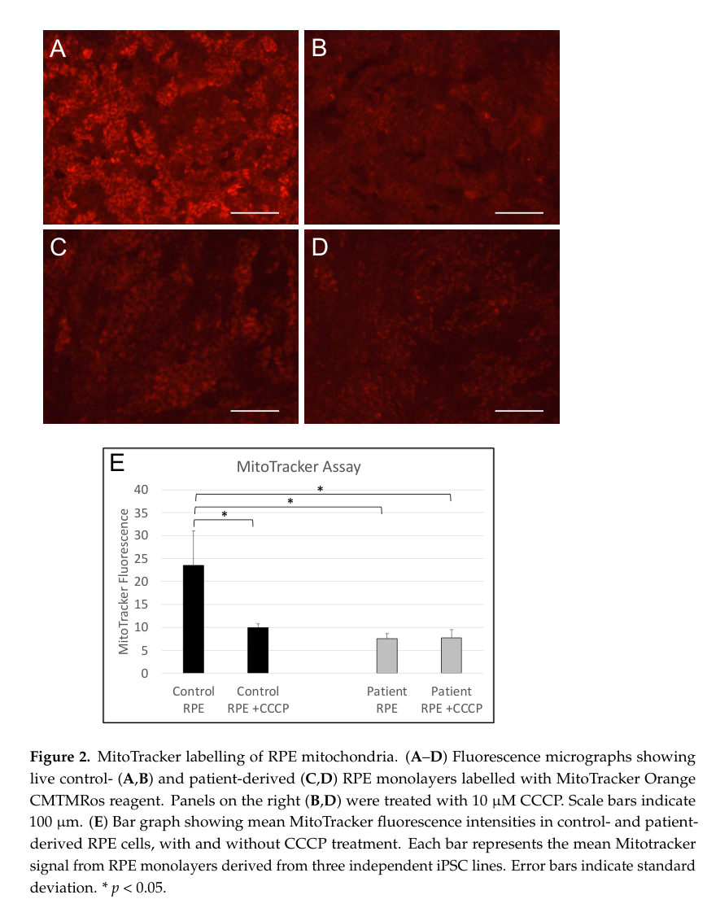
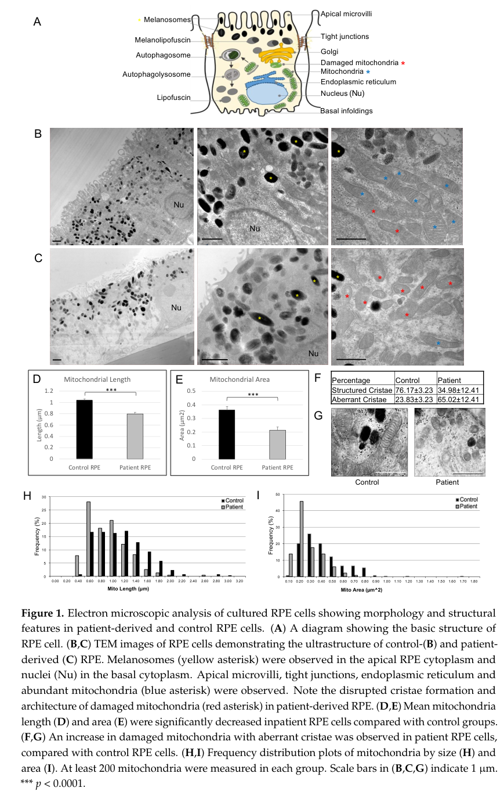

RCBTB1-related retinopathy, also known as retinal dystrophy with or without extraocular anomalies (RDEOA), is a rare autosomal recessive inherited retinal dystrophy caused by biallelic (missense or loss-of-function) variants in RCBTB1 (RCC1 and BTB domain containing protein 1), which encodes a putative substrate adaptor for the CUL3-RING E3 ubiquitin ligase complex. Only a small number of families have been reported to date. The ocular phenotype is variable, ranging from a classic rod-cone dystrophy (retinitis pigmentosa) beginning in the second decade of life to a later-onset (fourth-to-fifth decade), macula-predominant chorioretinal atrophy with peripheral reticular degeneration, sharing phenotypic similarities with mitochondrial retinopathy. Patient-derived iPSC-RPE studies directly confirm mitochondrial dysfunction, elevated oxidative stress, and blunted NFE2L2 (NRF2) stress-response induction, tying the ubiquitination defect to a retinal oxidative-injury mechanism. A subset of families additionally show extraocular anomalies (goiter/thyroid dysfunction, primary ovarian insufficiency, mild intellectual disability, or adult-onset sensorineural hearing loss). Mechanistically, the biallelic variants studied here are distinct from heterozygous RCBTB1 haploinsufficiency, which has separately been associated with Norrin/FZD4-Wnt/beta-catenin-pathway retinal-angiogenesis disorders (Coats disease and familial exudative vitreoretinopathy) rather than photoreceptor/RPE degeneration; the two RCBTB1-associated disease mechanisms are not modeled as the same entry (see `differential_diagnoses`).
Ask a research question about RCBTB1-Related Retinopathy. OpenScientist will conduct autonomous deep research using the Disorder Mechanisms Knowledge Base and PubMed literature (typically 10-30 minutes).
Do not include personal health information in your question. Questions and results are cached in your browser's local storage.
Conditions with similar clinical presentations that must be differentiated from RCBTB1-Related Retinopathy:
name: RCBTB1-Related Retinopathy
creation_date: "2026-07-16T00:00:00Z"
category: Mendelian
description: >
RCBTB1-related retinopathy, also known as retinal dystrophy with or without
extraocular anomalies (RDEOA), is a rare autosomal recessive inherited
retinal dystrophy caused by biallelic (missense or loss-of-function)
variants in RCBTB1 (RCC1 and BTB domain containing protein 1), which
encodes a putative substrate adaptor for the CUL3-RING E3 ubiquitin ligase
complex. Only a small number of families have been reported to date. The
ocular phenotype is variable, ranging from a classic rod-cone dystrophy
(retinitis pigmentosa) beginning in the second decade of life to a
later-onset (fourth-to-fifth decade), macula-predominant chorioretinal
atrophy with peripheral reticular degeneration, sharing phenotypic
similarities with mitochondrial retinopathy. Patient-derived iPSC-RPE
studies directly confirm mitochondrial dysfunction, elevated oxidative
stress, and blunted NFE2L2 (NRF2) stress-response induction, tying the
ubiquitination defect to a retinal oxidative-injury mechanism. A subset of
families additionally show extraocular anomalies (goiter/thyroid
dysfunction, primary ovarian insufficiency, mild intellectual disability,
or adult-onset sensorineural hearing loss). Mechanistically, the biallelic
variants studied here are distinct from heterozygous RCBTB1
haploinsufficiency, which has separately been associated with
Norrin/FZD4-Wnt/beta-catenin-pathway retinal-angiogenesis disorders (Coats
disease and familial exudative vitreoretinopathy) rather than
photoreceptor/RPE degeneration; the two RCBTB1-associated disease
mechanisms are not modeled as the same entry (see
`differential_diagnoses`).
disease_term:
preferred_term: RCBTB1-related retinopathy
term:
id: MONDO:0014955
label: RCBTB1-related retinopathy
synonyms:
- Retinal dystrophy with or without extraocular anomalies
- RDEOA
parents:
- Ophthalmological Disease
- Retinal Dystrophy
- Inherited retinal dystrophy
mappings:
mondo_mappings:
- term:
id: MONDO:0014955
label: RCBTB1-related retinopathy
mapping_predicate: skos:exactMatch
mapping_source: MONDO
has_subtypes:
- name: Early-Onset RP
display_name: Early-Onset Rod-Cone Dystrophy Subtype
description: >
Presentation compatible with classic retinitis pigmentosa (rod-cone
dystrophy) beginning in the second decade of life, without central
chorioretinal atrophy as the dominant feature.
- name: Late-Onset Macular
display_name: Later-Onset Macular Chorioretinal Atrophy Subtype
description: >
Macula-predominant disease with symptom onset in the fourth-to-fifth
decade of life, featuring central chorioretinal (nummular, fovea-abutting)
atrophy and peripheral reticular pigmentary degeneration. The most
commonly reported presentation across published families.
- name: Syndromic
display_name: Syndromic Subtype (Extraocular Anomalies)
description: >
Retinal dystrophy (either subtype above) co-occurring with one or more
extraocular features: goiter/thyroid dysfunction, primary ovarian
insufficiency, mild intellectual disability, or adult-onset sensorineural
hearing loss. Observed in a subset of reported families; the causal
relationship between RCBTB1 and each extraocular feature is proposed
(via the ubiquitously expressed CUL3/NFE2L2 stress-response pathway) but
not fully established for every feature.
inheritance:
- name: Autosomal recessive inheritance
inheritance_term:
preferred_term: Autosomal recessive inheritance
term:
id: HP:0000007
label: Autosomal recessive inheritance
description: >
RCBTB1-related retinopathy is inherited in an autosomal recessive manner;
all reported disease-causing variants are homozygous or compound
heterozygous missense changes that segregate with disease in affected
families.
evidence:
- reference: PMID:27486781
reference_title: "Isolated and Syndromic Retinal Dystrophy Caused by Biallelic Mutations in RCBTB1, a Gene Implicated in Ubiquitination."
supports: SUPPORT
evidence_source: HUMAN_CLINICAL
snippet: "revealed a homozygous missense mutation, c.973C>T (p.His325Tyr), in RCBTB1. In affected individuals, it was found to segregate with retinitis pigmentosa (RP), goiter, primary ovarian insufficiency, and mild intellectual disability."
explanation: >-
Homozygosity mapping and whole-exome sequencing identified a homozygous
RCBTB1 missense variant segregating with disease in a consanguineous
family, establishing autosomal recessive inheritance.
pathophysiology:
- name: RCBTB1 Loss of CUL3 Substrate-Adaptor Function
description: >
Biallelic missense variants cluster in either the sixth repeat of the
RCC1-like domain (RLD) or the first BTB domain (BTB1) of RCBTB1, both
highly conserved protein-interaction regions. RCBTB1 normally acts as a
substrate adaptor for cullin 3 (CUL3), the core component of CUL3-RING E3
ubiquitin ligase (CRL3) complexes, and interacts with the E2 conjugating
enzyme UBE2E3, which is abundant in the retina. Missense variants at
these conserved residues are predicted to disrupt RCBTB1's
protein-protein interactions within the CRL3 complex.
cell_types:
- preferred_term: Retinal rod cell
term:
id: CL:0000604
label: retinal rod cell
- preferred_term: Retinal cone cell
term:
id: CL:0000573
label: retinal cone cell
- preferred_term: Retinal pigment epithelial cell
term:
id: CL:0002586
label: retinal pigment epithelial cell
biological_processes:
- preferred_term: Protein ubiquitination
term:
id: GO:0016567
label: protein ubiquitination
modifier: DECREASED
evidence:
- reference: PMID:27486781
reference_title: "Isolated and Syndromic Retinal Dystrophy Caused by Biallelic Mutations in RCBTB1, a Gene Implicated in Ubiquitination."
supports: SUPPORT
evidence_source: HUMAN_CLINICAL
snippet: "RCBTB1 was identified as a putative substrate adaptor for cullin 3 (CUL3). CUL3 is the major component of the CULLIN3-RING ubiquitin ligases (CRL3)"
explanation: >-
Establishes RCBTB1's molecular role as a CUL3 substrate adaptor within
the CRL3 ubiquitin ligase complex.
- reference: PMID:27486781
reference_title: "Isolated and Syndromic Retinal Dystrophy Caused by Biallelic Mutations in RCBTB1, a Gene Implicated in Ubiquitination."
supports: SUPPORT
evidence_source: HUMAN_CLINICAL
snippet: "RCBTB1 was shown to interact with UBE2E3, an E2 enzyme that is highly present in the retina and is important for modulating the balance between RPE cell proliferation and differentiation."
explanation: >-
Documents the RCBTB1-UBE2E3 interaction and UBE2E3's retinal
abundance, linking the ubiquitination defect to retinal biology.
- reference: PMID:37408192
reference_title: "Mitochondrial Dysfunction and Impaired Antioxidant Responses in Retinal Pigment Epithelial Cells Derived from a Patient with RCBTB1-Associated Retinopathy."
supports: SUPPORT
evidence_source: IN_VITRO
snippet: "RCBTB1 was co-immunoprecipitated from control RPE protein lysates by antibodies for either UBE2E3 or CUL3."
explanation: >-
Directly confirms the RCBTB1-UBE2E3-CUL3 physical interaction in
patient/control iPSC-derived RPE cells (rather than a heterologous or
non-ocular system), strengthening the retinal relevance of the
substrate-adaptor mechanism.
downstream:
- target: Impaired NFE2L2 (NRF2)-Mediated Oxidative Stress Response
- name: Impaired NFE2L2 (NRF2)-Mediated Oxidative Stress Response
description: >
UBE2E3 regulates the localization and activity of NFE2L2 (NRF2), a
stress-response transcription factor, in concert with CRL3 complex
components. In peripheral-blood mononuclear cells from affected
individuals, mRNA expression of CUL3, NFE2L2, and three NFE2L2 target
genes (RXRA, IDH1, SLC25A25) was significantly decreased relative to
controls, consistent with impaired NFE2L2 pathway activity downstream of
the RCBTB1/CUL3 defect. This has since been directly confirmed in
patient-derived retinal tissue: control iPSC-derived RPE cells
upregulate RCBTB1 and NFE2L2 expression in response to oxidative-stress
induction (tert-butyl hydroperoxide, tBHP), but this protective
upregulation is markedly blunted in RCBTB1-deficient patient RPE cells.
The retina is considered particularly sensitive to oxidative stress, and
NFE2L2 is a central regulator that protects retinal tissue from
oxidative injury.
biological_processes:
- preferred_term: Response to oxidative stress
term:
id: GO:0006979
label: response to oxidative stress
modifier: DECREASED
evidence:
- reference: PMID:27486781
reference_title: "Isolated and Syndromic Retinal Dystrophy Caused by Biallelic Mutations in RCBTB1, a Gene Implicated in Ubiquitination."
supports: SUPPORT
evidence_source: HUMAN_CLINICAL
snippet: "we observed significantly lower expression in affected individuals than in control individuals for CUL3, NFE2L2, and three NFE2L2 target genes"
explanation: >-
Direct patient-derived molecular evidence that RCBTB1 mutations reduce
expression of CUL3, NFE2L2, and three NFE2L2 target genes (RXRA, IDH1,
SLC25A25).
- reference: PMID:27486781
reference_title: "Isolated and Syndromic Retinal Dystrophy Caused by Biallelic Mutations in RCBTB1, a Gene Implicated in Ubiquitination."
supports: SUPPORT
evidence_source: HUMAN_CLINICAL
snippet: "The retina is known to be extremely sensitive to oxidative stress. In this way, NFE2L2 is crucial for protecting and preserving retinal health."
explanation: >-
Establishes the general importance of the NFE2L2 pathway for retinal
protection against oxidative stress.
- reference: PMID:37408192
reference_title: "Mitochondrial Dysfunction and Impaired Antioxidant Responses in Retinal Pigment Epithelial Cells Derived from a Patient with RCBTB1-Associated Retinopathy."
supports: SUPPORT
evidence_source: IN_VITRO
snippet: "Control RPE upregulated RCBTB1 and NFE2L2 expression in response to tBHP treatment; however, this response was highly attenuated in patient RPE."
explanation: >-
Directly confirms, in patient-derived RPE cells rather than a
non-ocular surrogate tissue, that the NFE2L2 stress-response
induction is blunted by RCBTB1 deficiency.
downstream:
- target: RPE Mitochondrial Dysfunction and Oxidative Damage
- name: RPE Mitochondrial Dysfunction and Oxidative Damage
description: >
Patient-derived iPSC-RPE cells show abnormal mitochondrial ultrastructure
and reduced mitochondrial membrane potential (MitoTracker fluorescence)
at baseline, along with increased reactive oxygen species (ROS) levels
and heightened sensitivity to further ROS generation upon oxidative
stress induction, consistent with the blunted NFE2L2 protective response
failing to contain oxidative damage in RPE mitochondria.
cell_types:
- preferred_term: Retinal pigment epithelial cell
term:
id: CL:0002586
label: retinal pigment epithelial cell
biological_processes:
- preferred_term: Mitochondrion organization
term:
id: GO:0007005
label: mitochondrion organization
modifier: DECREASED
- preferred_term: Reactive oxygen species metabolic process
term:
id: GO:0072593
label: reactive oxygen species metabolic process
modifier: INCREASED
evidence:
- reference: PMID:37408192
reference_title: "Mitochondrial Dysfunction and Impaired Antioxidant Responses in Retinal Pigment Epithelial Cells Derived from a Patient with RCBTB1-Associated Retinopathy."
supports: SUPPORT
evidence_source: IN_VITRO
snippet: "Patient-derived RPE cells displayed abnormal mitochondrial ultrastructure and reduced MitoTracker fluorescence compared with controls."
explanation: >-
Documents direct mitochondrial structural and functional
abnormalities in RCBTB1-deficient patient RPE cells.
- reference: PMID:37408192
reference_title: "Mitochondrial Dysfunction and Impaired Antioxidant Responses in Retinal Pigment Epithelial Cells Derived from a Patient with RCBTB1-Associated Retinopathy."
supports: SUPPORT
evidence_source: IN_VITRO
snippet: "Patient RPE cells displayed increased levels of reactive oxygen species (ROS) and were more sensitive to tBHP-induced ROS generation than control RPE."
explanation: >-
Documents elevated baseline and stress-induced ROS in RCBTB1-deficient
patient RPE cells.
downstream:
- target: Progressive Photoreceptor and RPE Degeneration
- name: Progressive Photoreceptor and RPE Degeneration
conforms_to: "photoreceptor_degeneration#Rod Photoreceptor Apoptosis"
description: >
Among the downregulated NFE2L2 target genes, RXRA is notable because its
product (retinoid X receptor alpha) is present in the rod photoreceptor
inner segment and its activation is known to prevent
oxidative-stress-induced photoreceptor apoptosis, mechanistically linking
reduced NFE2L2 pathway activity to rod photoreceptor loss. Clinically,
this manifests as a spectrum from classic rod-cone dystrophy (early-onset
subtype) to a progressive disease with central chorioretinal atrophy and
peripheral reticular pigmentary degeneration (later-onset,
macula-predominant subtype), with secondary RPE involvement in both.
cell_types:
- preferred_term: Retinal rod cell
term:
id: CL:0000604
label: retinal rod cell
- preferred_term: Retinal cone cell
term:
id: CL:0000573
label: retinal cone cell
- preferred_term: Retinal pigment epithelial cell
term:
id: CL:0002586
label: retinal pigment epithelial cell
evidence:
- reference: PMID:27486781
reference_title: "Isolated and Syndromic Retinal Dystrophy Caused by Biallelic Mutations in RCBTB1, a Gene Implicated in Ubiquitination."
supports: SUPPORT
evidence_source: HUMAN_CLINICAL
snippet: "retinoid X receptor alpha (RXRalpha), encoded by RXRA, is known to be present in the rod inner segment layer, and activation of RXRs prevents photoreceptor oxidative stress-induced apoptosis"
explanation: >-
Mechanistically links the downregulated NFE2L2-target gene RXRA to
protection against photoreceptor oxidative-stress-induced apoptosis.
- reference: PMID:27486781
reference_title: "Isolated and Syndromic Retinal Dystrophy Caused by Biallelic Mutations in RCBTB1, a Gene Implicated in Ubiquitination."
supports: SUPPORT
evidence_source: HUMAN_CLINICAL
snippet: "The retinal phenotype associated with RCBTB1 mutations varies from a severe iRD compatible with RP to a progressive iRD with central chorioretinal atrophy and peripheral reticular dystrophy"
explanation: >-
Documents the clinical spectrum from RP to macula-predominant
chorioretinal atrophy with peripheral reticular degeneration.
discussions:
- discussion_id: gap_rcbtb1_substrate_unknown
kind: KNOWLEDGE_GAP
attaches_to:
- "pathophysiology#RCBTB1 Loss of CUL3 Substrate-Adaptor Function"
prompt: >-
What are the direct retinal substrates ubiquitinated by the RCBTB1/CUL3
complex whose accumulation or mislocalization links loss of adaptor
function to NFE2L2 pathway dysregulation and mitochondrial damage?
rationale: >-
Patient-derived iPSC-RPE studies have since directly confirmed, in
retinal tissue itself, both the RCBTB1-CUL3/UBE2E3 physical interaction
and blunted NFE2L2 stress-response induction with associated
mitochondrial dysfunction (closing the earlier gap that this chain was
only demonstrated in peripheral-blood mononuclear cells, a non-ocular
surrogate tissue). However, the founding study explicitly notes that
RCBTB1's direct ubiquitination substrate(s) remain unidentified, so the
proximate molecular step linking loss of CUL3-adaptor activity to NFE2L2
dysregulation is still inferred rather than mechanistically demonstrated.
proposed_experiments:
- experiment_id: exp_rcbtb1_retinal_substrate_id
name: Retinal RCBTB1/CUL3 substrate identification
description: >-
Identify RCBTB1/CUL3 substrates in retinal or RPE cell models (e.g. via
proximity labeling or substrate-trapping proteomics), building on the
confirmed but substrate-agnostic RCBTB1-CUL3/UBE2E3 co-immunoprecipitation
in patient-derived RPE cells.
phenotypes:
- name: Rod-cone dystrophy
category: Ophthalmologic
subtype: Early-Onset RP
phenotype_term:
preferred_term: Retinitis pigmentosa
term:
id: HP:0000510
label: Rod-cone dystrophy
evidence:
- reference: PMID:27486781
reference_title: "Isolated and Syndromic Retinal Dystrophy Caused by Biallelic Mutations in RCBTB1, a Gene Implicated in Ubiquitination."
supports: SUPPORT
evidence_source: HUMAN_CLINICAL
snippet: "Ocular phenotypes ranged from typical RP starting in the second decade to chorioretinal dystrophy with a later age of onset."
explanation: >-
Documents typical retinitis pigmentosa beginning in the second decade
as one presentation of RCBTB1-related retinopathy.
- name: Chorioretinal atrophy
category: Ophthalmologic
subtype: Late-Onset Macular
phenotype_term:
preferred_term: Central chorioretinal atrophy
term:
id: HP:0000533
label: Chorioretinal atrophy
evidence:
- reference: PMID:27486781
reference_title: "Isolated and Syndromic Retinal Dystrophy Caused by Biallelic Mutations in RCBTB1, a Gene Implicated in Ubiquitination."
supports: SUPPORT
evidence_source: HUMAN_CLINICAL
snippet: "a progressive iRD with central chorioretinal atrophy and peripheral reticular dystrophy"
explanation: Documents central chorioretinal atrophy in the later-onset subtype.
- reference: PMID:35057699
reference_title: "Novel RCBTB1 variants causing later-onset non-syndromic retinal dystrophy with macular chorioretinal atrophy."
supports: SUPPORT
evidence_source: HUMAN_CLINICAL
snippet: "All three had macula-predominant disease with symptom onset in the fifth decade of life."
explanation: >-
Independent cohort confirms macula-predominant chorioretinal atrophy
with fifth-decade symptom onset.
- name: Reticular retinal dystrophy
category: Ophthalmologic
subtype: Late-Onset Macular
phenotype_term:
preferred_term: Peripheral reticular pigmentary degeneration
term:
id: HP:0007913
label: Reticular retinal dystrophy
evidence:
- reference: PMID:27486781
reference_title: "Isolated and Syndromic Retinal Dystrophy Caused by Biallelic Mutations in RCBTB1, a Gene Implicated in Ubiquitination."
supports: SUPPORT
evidence_source: HUMAN_CLINICAL
snippet: "a progressive iRD with central chorioretinal atrophy and peripheral reticular dystrophy"
explanation: Documents peripheral reticular dystrophy in the later-onset subtype.
- name: Peripapillary atrophy
category: Ophthalmologic
subtype: Late-Onset Macular
phenotype_term:
preferred_term: Peripapillary atrophy
term:
id: HP:0500087
label: Peripapillary atrophy
evidence:
- reference: PMID:41162190
reference_title: "Multimodal imaging of RCBTB1-associated retinal dystrophy."
supports: SUPPORT
evidence_source: HUMAN_CLINICAL
snippet: "Fundus examination showed macular and peripapillary atrophy with foveal sparing, as well as granular alterations extending to the mid-peripheral retina."
explanation: >-
Multimodal imaging documents peripapillary atrophy with foveal
sparing in a molecularly confirmed RCBTB1 patient.
- name: Reduced visual acuity
category: Ophthalmologic
phenotype_term:
preferred_term: Reduced visual acuity
term:
id: HP:0007663
label: Reduced visual acuity
evidence:
- reference: PMID:41162190
reference_title: "Multimodal imaging of RCBTB1-associated retinal dystrophy."
supports: SUPPORT
evidence_source: HUMAN_CLINICAL
snippet: "A 54-year-old woman presented with a best-corrected visual acuity of 20/50 in the right and 20/63 in the left eye, respectively."
explanation: Documents reduced visual acuity in a molecularly confirmed patient.
- name: Goiter
category: Endocrine
subtype: Syndromic
phenotype_term:
preferred_term: Goiter
term:
id: HP:0000853
label: Goiter
evidence:
- reference: PMID:27486781
reference_title: "Isolated and Syndromic Retinal Dystrophy Caused by Biallelic Mutations in RCBTB1, a Gene Implicated in Ubiquitination."
supports: SUPPORT
evidence_source: HUMAN_CLINICAL
snippet: "two sisters have RP, small teeth, goiter with normal thyroid-stimulating hormone (TSH) and free thyroxine (FT4) and the absence of thyroid autoantibodies"
explanation: Documents goiter as an extraocular feature in a syndromic family.
- name: Primary ovarian insufficiency
category: Genitourinary
subtype: Syndromic
phenotype_term:
preferred_term: Primary ovarian insufficiency
term:
id: HP:0008209
label: Premature ovarian insufficiency
evidence:
- reference: PMID:27486781
reference_title: "Isolated and Syndromic Retinal Dystrophy Caused by Biallelic Mutations in RCBTB1, a Gene Implicated in Ubiquitination."
supports: SUPPORT
evidence_source: HUMAN_CLINICAL
snippet: "secondary amenorrhea at the age of 15-16 years and gonadotropin elevation, indicating POI"
explanation: Documents primary/premature ovarian insufficiency as an extraocular feature.
- name: Mild intellectual disability
category: Neurologic
subtype: Syndromic
phenotype_term:
preferred_term: Mild intellectual disability
term:
id: HP:0001256
label: Mild intellectual disability
evidence:
- reference: PMID:27486781
reference_title: "Isolated and Syndromic Retinal Dystrophy Caused by Biallelic Mutations in RCBTB1, a Gene Implicated in Ubiquitination."
supports: SUPPORT
evidence_source: HUMAN_CLINICAL
snippet: "it was found to segregate with retinitis pigmentosa (RP), goiter, primary ovarian insufficiency, and mild intellectual disability"
explanation: Documents mild intellectual disability as an extraocular feature.
- name: Sensorineural hearing loss
category: Audiologic
subtype: Syndromic
phenotype_term:
preferred_term: Adult-onset sensorineural hearing loss
term:
id: HP:0000407
label: Sensorineural hearing impairment
evidence:
- reference: PMID:27486781
reference_title: "Isolated and Syndromic Retinal Dystrophy Caused by Biallelic Mutations in RCBTB1, a Gene Implicated in Ubiquitination."
supports: SUPPORT
evidence_source: HUMAN_CLINICAL
snippet: "Non-ocular features observed in families affected by RCBTB1 mutations include adult-onset sensorineural hearing loss (F4)"
explanation: Documents adult-onset sensorineural hearing loss in one family.
genetic:
- name: RCBTB1
gene_term:
preferred_term: RCBTB1
term:
id: hgnc:18243
label: RCBTB1
frequency: >-
Extremely rare; only a small number of families have been reported to
date, including a Mediterranean founder haplotype (p.Val307Met) in two
families of Italian and Greek origin.
evidence:
- reference: PMID:27486781
reference_title: "Isolated and Syndromic Retinal Dystrophy Caused by Biallelic Mutations in RCBTB1, a Gene Implicated in Ubiquitination."
supports: SUPPORT
evidence_source: HUMAN_CLINICAL
snippet: "The c.919G>A (p.Val307Met) mutation was found in two families originating from Italy (F2) and Greece (F3). Segregation analysis with microsatellite markers and SNPs revealed a 3 Mb common haplotype, which suggests a Mediterranean founder mutation"
explanation: Documents a Mediterranean founder RCBTB1 mutation shared by two families.
- reference: PMID:35057699
reference_title: "Novel RCBTB1 variants causing later-onset non-syndromic retinal dystrophy with macular chorioretinal atrophy."
supports: SUPPORT
evidence_source: HUMAN_CLINICAL
snippet: "Variants in RCBTB1 were recently described to cause a retinal dystrophy with only eight families described to date"
explanation: Confirms the extreme rarity of RCBTB1-related retinopathy as of 2022.
treatments:
- name: Low Vision Rehabilitation
description: Supportive low-vision aids and rehabilitation.
treatment_term:
preferred_term: low vision rehabilitation
term:
id: NCIT:C15747
label: Supportive Care
notes: >-
No disease-modifying treatment is currently available for RCBTB1-related
retinopathy; management is supportive. Generic
antioxidant/NFE2L2-augmentation gene therapy has been proposed as a
theoretical strategy given the pathway implicated here, but has not been
tested in RCBTB1 patients or models, so it is not curated here as a
treatment.
- name: Genetic Counseling
description: >
Genetic counseling for autosomal recessive inheritance, carrier
detection, and family planning, including discussion of possible
extraocular (thyroid, ovarian, auditory, cognitive) involvement in
syndromic cases.
treatment_term:
preferred_term: genetic counseling
term:
id: NCIT:C15240
label: Genetic Counseling
notes: >-
Standard of care for an autosomal recessive Mendelian retinopathy with
molecularly confirmed biallelic RCBTB1 variants; no RCBTB1-specific
genetic-counseling outcome study was identified to cite directly.
differential_diagnoses:
- name: Familial Exudative Vitreoretinopathy
disease_term:
preferred_term: familial exudative vitreoretinopathy
term:
id: MONDO:0019516
label: exudative vitreoretinopathy
description: >
Heterozygous RCBTB1 haploinsufficiency (frameshift variants reducing
RCBTB1 protein to approximately half of normal levels — a distinct
zygosity and molecular mechanism from the biallelic variants modeled in
this entry) has separately been shown to cause Coats disease and familial
exudative vitreoretinopathy through impaired
Norrin/FZD4-dependent Wnt/beta-catenin retinal-angiogenesis signaling,
rather than through the CUL3/NFE2L2 photoreceptor- and RPE-oxidative-stress
mechanism modeled here. The two RCBTB1-associated phenotypes are
genetically (heterozygous vs. biallelic) and mechanistically
(angiogenesis vs. oxidative-stress-driven degeneration) distinct and are
not curated as the same entry.
distinguishing_features:
- Heterozygous (haploinsufficiency) rather than biallelic RCBTB1 variants
- Retinal vascular/angiogenesis defect (Norrin/FZD4-Wnt/beta-catenin
signaling) rather than photoreceptor/RPE oxidative-stress-driven
degeneration
- Preserved electroretinogram and absence of night blindness reported in
the one overlapping proband assessed for both conditions
evidence:
- reference: PMID:26908610
reference_title: "Haploinsufficiency of RCBTB1 is associated with Coats disease and familial exudative vitreoretinopathy."
supports: SUPPORT
evidence_source: IN_VITRO
snippet: "In patient-derived lymphoblastoid cell lines (LCLs), the protein level of RCBTB1 is approximately half that of unaffected control LCLs, which is indicative of a haploinsufficiency mechanism."
explanation: >-
Primary source directly demonstrating the haploinsufficiency mechanism
(as opposed to the biallelic loss-of-function mechanism modeled in
this entry) underlying RCBTB1-associated vitreoretinopathy.
- reference: PMID:26908610
reference_title: "Haploinsufficiency of RCBTB1 is associated with Coats disease and familial exudative vitreoretinopathy."
supports: SUPPORT
evidence_source: MODEL_ORGANISM
snippet: "transgenic fli1:EGFP zebrafish with rcbtb1 knockdown exhibited anomalies in intersegmental and intraocular vessels"
explanation: >-
Zebrafish knockdown model demonstrates the angiogenesis-driven
mechanism distinguishing this haploinsufficiency phenotype from the
photoreceptor/RPE degeneration modeled in this entry.
- reference: PMID:27486781
reference_title: "Isolated and Syndromic Retinal Dystrophy Caused by Biallelic Mutations in RCBTB1, a Gene Implicated in Ubiquitination."
supports: SUPPORT
evidence_source: HUMAN_CLINICAL
snippet: "haploinsufficiency of RCBTB1 was shown in two families in whom mutations segregate with Coats disease"
explanation: >-
Independent cross-reference (from the founding biallelic-retinopathy
study) corroborating that RCBTB1 haploinsufficiency causes a distinct
angiogenesis-driven disease, separate from the biallelic
photoreceptor/RPE-degeneration mechanism modeled in this entry.
RCBTB1-associated retinopathy is an IRD attributed to biallelic variants in RCBTB1 and characterized clinically by progressive macular chorioretinal atrophy with prominent RPE involvement, and in some cases an RP-like phenotype. (huang2023mitochondrialdysfunctionand pages 9-10, huang2023mitochondrialdysfunctionand pages 1-2)
The retrieved corpus did not contain OMIM/Orphanet/MeSH/ICD/MONDO identifiers specifically for “RCBTB1-associated retinopathy” (evidence gap). (huang2023mitochondrialdysfunctionand pages 1-2)
However, the related vitreoretinopathy paper provides identifiers for disorders in which RCBTB1 haploinsufficiency was implicated: - FEVR: OMIM 133780, 305390, 605750, 601813, 613310, 616468 (wu2016haploinsufficiencyofrcbtb1 pages 1-2) - Coats disease: OMIM 300216 (wu2016haploinsufficiencyofrcbtb1 pages 1-2) - Related congenital vitreoretinopathies mentioned: persistent hyperplastic primary vitreous (OMIM 611308) and Norrie disease (OMIM 310600) (wu2016haploinsufficiencyofrcbtb1 pages 1-2)
Not identified in retrieved sources.
From a literature synthesis in a 2023 mechanistic study: - 15 cases from 11 families with biallelic RCBTB1 variants are described. (huang2023mitochondrialdysfunctionand pages 1-2) - Two main clinical patterns: 1) Progressive late-onset macular chorioretinal atrophy with peripheral retinal abnormalities presenting in the 40s–50s (11 cases from 9 families). (huang2023mitochondrialdysfunctionand pages 9-10) 2) Typical RP phenotype in the 20s (4 cases). (huang2023mitochondrialdysfunctionand pages 9-10) - Onset range for retinal atrophy (in nine families): 30–62 years. (huang2023mitochondrialdysfunctionand pages 9-10) - Common presentation: “gradually reduced visual acuity or visual distortion” from macular atrophy. (huang2023mitochondrialdysfunctionand pages 9-10)
Not quantified in the retrieved texts; progressive vision loss is implied. (huang2023mitochondrialdysfunctionand pages 9-10)
Biallelic retinopathy-associated variants mentioned: - Compound heterozygous frameshifting variants c.170delG and c.707delA (reported as associated with progressive chorioretinal atrophy over 5 years in an earlier natural history description cited/recapped in 2023). (huang2023mitochondrialdysfunctionand pages 1-2)
Heterozygous LoF variants in vitreoretinopathy (FEVR/Coats) paper (important for gene function and variant interpretation): - NM_018191.3:c.707delA (p.Asn236Thrfs*11) (Coats disease case). (wu2016haploinsufficiencyofrcbtb1 pages 2-3) - NM_018191.3:c.1172+1G>A (p.Glu349Glyfs*17) (FEVR cases). (wu2016haploinsufficiencyofrcbtb1 pages 2-3)
Not identified in retrieved sources.
No non-genetic environmental, lifestyle, or infectious contributors were identified in the retrieved sources.
Direct abstract quote supporting mechanism: “Patient-derived RPE cells displayed abnormal mitochondrial ultrastructure… increased levels of reactive oxygen species (ROS)… Control RPE upregulated RCBTB1 and NFE2L2… however, this response was highly attenuated in patient RPE… RCBTB1 was co-immunoprecipitated… by antibodies for either UBE2E3 or CUL3.” (huang2023mitochondrialdysfunctionand pages 1-2)
Key mechanistic findings (quantitative where available): - Mitochondrial dysfunction - Reduced mitochondrial membrane potential inferred from reduced MitoTracker signal (p = 0.0214). (huang2023mitochondrialdysfunctionand pages 5-6) - Ultrastructure abnormalities and increased damaged mitochondria; aberrant cristae 65.02 ± 12.41% (patient) vs 23.83 ± 3.23% (control). (huang2023mitochondrialdysfunctionand pages 5-6) - Oxidative stress dysregulation - Baseline ROS increased in patient iPSC-RPE (p = 0.015). (huang2023mitochondrialdysfunctionand pages 5-6) - Higher sensitivity to oxidative stress: significant ROS increase at 100 µM tBHP (p = 0.0463). (huang2023mitochondrialdysfunctionand pages 5-6) - Impaired NFE2L2/Nrf2 antioxidant response - NFE2L2 expression lower in untreated patient RPE (p = 0.0453) and fails to increase under tBHP, while control RPE upregulates NFE2L2 (e.g., p = 0.0437 at 100 µM; p = 0.0012 at 200 µM). (huang2023mitochondrialdysfunctionand pages 8-9) - NFE2L2 target genes (IDH1, SLC25A25, RXRA) reduced in patient RPE. (huang2023mitochondrialdysfunctionand pages 8-9) - Ubiquitination machinery interactions (CUL3/UBE2E3) - Co-immunoprecipitation shows RCBTB1 in complexes with CUL3 and UBE2E3; isoform-selective pull-down is described. (huang2023mitochondrialdysfunctionand pages 8-9) - An NFE2L2 antioxidant response element motif (TGACCCGGC) is noted upstream of RCBTB1 transcription start site, suggesting NFE2L2-regulated induction. (huang2023mitochondrialdysfunctionand pages 10-12)
Author interpretation (expert opinion): The authors conclude that their results “highlight RPE mitochondria as a key target site in the pathogenesis of RCBTB1-associated retinopathy” and suggest that therapies alleviating mitochondrial dysfunction may be useful. (huang2023mitochondrialdysfunctionand pages 10-12)
Wu et al. provide mechanistic evidence linking reduced RCBTB1 to Norrin/FZD4/LRP5 β-catenin signaling and angiogenesis: - RCBTB1 knockdown reduces β-catenin nuclear accumulation and reduces Norrin-induced TCF/LEF reporter activity (reported reductions to approximately 50% and 33% at different ligand doses in evidence synthesis). (wu2016haploinsufficiencyofrcbtb1 pages 3-6) - Zebrafish rcbtb1 knockdown causes vascular anomalies in intersegmental and intraocular vessels. (wu2016haploinsufficiencyofrcbtb1 pages 1-2, wu2016haploinsufficiencyofrcbtb1 pages 6-7)
Not specified for RCBTB1 macular chorioretinal atrophy in retrieved sources (evidence gap).
Quantitative prognosis (VA trajectories, blindness rates) is not provided in retrieved sources; progressive enlargement of atrophic lesions is described. (huang2023mitochondrialdysfunctionand pages 9-10)
Disease-specific management for RCBTB1-retinopathy is not detailed in retrieved sources.
For related Coats disease case, surgical/medical retinal detachment management is described: cryopexy, pars plana vitrectomy, removal of subretinal fibrous cord, and encircling buckle. (wu2016haploinsufficiencyofrcbtb1 pages 2-3)
Authors propose that therapeutic approaches aimed at alleviating mitochondrial dysfunction may be useful, based on similarity to severe mitochondrial retinopathy and observed mitochondrial pathology. (huang2023mitochondrialdysfunctionand pages 10-12)
No RCBTB1-targeted clinical trials were retrieved. Gene therapy trials retrieved were RPE65-focused (e.g., LX101) and are not directly applicable to RCBTB1. (NCT06212297 chunk 1, NCT07054632 chunk 1)
Not described in retrieved sources; general genetic counseling and cascade testing are implied by Mendelian genetics but not explicitly detailed.
Not identified in retrieved sources.
Figures extracted from the 2023 iPSC-RPE study show mitochondrial ultrastructural abnormalities and reduced MitoTracker labeling in patient-derived RPE. (huang2023mitochondrialdysfunctionand media 84d6e22c, huang2023mitochondrialdysfunctionand media 34d1da4f)
References
(huang2023mitochondrialdysfunctionand pages 9-10): Zhiqin Huang, Dan Zhang, Shang-Chih Chen, Di Huang, David Mackey, Fred K. Chen, and Samuel McLenachan. Mitochondrial dysfunction and impaired antioxidant responses in retinal pigment epithelial cells derived from a patient with rcbtb1-associated retinopathy. Cells, 12:1358, May 2023. URL: https://doi.org/10.3390/cells12101358, doi:10.3390/cells12101358. This article has 9 citations.
(huang2023mitochondrialdysfunctionand pages 1-2): Zhiqin Huang, Dan Zhang, Shang-Chih Chen, Di Huang, David Mackey, Fred K. Chen, and Samuel McLenachan. Mitochondrial dysfunction and impaired antioxidant responses in retinal pigment epithelial cells derived from a patient with rcbtb1-associated retinopathy. Cells, 12:1358, May 2023. URL: https://doi.org/10.3390/cells12101358, doi:10.3390/cells12101358. This article has 9 citations.
(wu2016haploinsufficiencyofrcbtb1 pages 2-3): Jeng-Hung Wu, Jorn-Hon Liu, Yu-Chieh Ko, Chi-Tang Wang, Yu-Chien Chung, Kuo-Chang Chu, Tze-Tze Liu, Hsiao-Ming Chao, Yun-Jin Jiang, Shih-Jen Chen, and Ming-Yi Chung. Haploinsufficiency of rcbtb1 is associated with coats disease and familial exudative vitreoretinopathy. Human molecular genetics, 25 8:1637-47, Apr 2016. URL: https://doi.org/10.1093/hmg/ddw041, doi:10.1093/hmg/ddw041. This article has 75 citations and is from a domain leading peer-reviewed journal.
(wu2016haploinsufficiencyofrcbtb1 pages 3-6): Jeng-Hung Wu, Jorn-Hon Liu, Yu-Chieh Ko, Chi-Tang Wang, Yu-Chien Chung, Kuo-Chang Chu, Tze-Tze Liu, Hsiao-Ming Chao, Yun-Jin Jiang, Shih-Jen Chen, and Ming-Yi Chung. Haploinsufficiency of rcbtb1 is associated with coats disease and familial exudative vitreoretinopathy. Human molecular genetics, 25 8:1637-47, Apr 2016. URL: https://doi.org/10.1093/hmg/ddw041, doi:10.1093/hmg/ddw041. This article has 75 citations and is from a domain leading peer-reviewed journal.
(huang2023mitochondrialdysfunctionand pages 8-9): Zhiqin Huang, Dan Zhang, Shang-Chih Chen, Di Huang, David Mackey, Fred K. Chen, and Samuel McLenachan. Mitochondrial dysfunction and impaired antioxidant responses in retinal pigment epithelial cells derived from a patient with rcbtb1-associated retinopathy. Cells, 12:1358, May 2023. URL: https://doi.org/10.3390/cells12101358, doi:10.3390/cells12101358. This article has 9 citations.
(huang2023mitochondrialdysfunctionand pages 10-12): Zhiqin Huang, Dan Zhang, Shang-Chih Chen, Di Huang, David Mackey, Fred K. Chen, and Samuel McLenachan. Mitochondrial dysfunction and impaired antioxidant responses in retinal pigment epithelial cells derived from a patient with rcbtb1-associated retinopathy. Cells, 12:1358, May 2023. URL: https://doi.org/10.3390/cells12101358, doi:10.3390/cells12101358. This article has 9 citations.
(wu2016haploinsufficiencyofrcbtb1 pages 1-2): Jeng-Hung Wu, Jorn-Hon Liu, Yu-Chieh Ko, Chi-Tang Wang, Yu-Chien Chung, Kuo-Chang Chu, Tze-Tze Liu, Hsiao-Ming Chao, Yun-Jin Jiang, Shih-Jen Chen, and Ming-Yi Chung. Haploinsufficiency of rcbtb1 is associated with coats disease and familial exudative vitreoretinopathy. Human molecular genetics, 25 8:1637-47, Apr 2016. URL: https://doi.org/10.1093/hmg/ddw041, doi:10.1093/hmg/ddw041. This article has 75 citations and is from a domain leading peer-reviewed journal.
(huang2023mitochondrialdysfunctionand pages 5-6): Zhiqin Huang, Dan Zhang, Shang-Chih Chen, Di Huang, David Mackey, Fred K. Chen, and Samuel McLenachan. Mitochondrial dysfunction and impaired antioxidant responses in retinal pigment epithelial cells derived from a patient with rcbtb1-associated retinopathy. Cells, 12:1358, May 2023. URL: https://doi.org/10.3390/cells12101358, doi:10.3390/cells12101358. This article has 9 citations.
(wu2016haploinsufficiencyofrcbtb1 pages 6-7): Jeng-Hung Wu, Jorn-Hon Liu, Yu-Chieh Ko, Chi-Tang Wang, Yu-Chien Chung, Kuo-Chang Chu, Tze-Tze Liu, Hsiao-Ming Chao, Yun-Jin Jiang, Shih-Jen Chen, and Ming-Yi Chung. Haploinsufficiency of rcbtb1 is associated with coats disease and familial exudative vitreoretinopathy. Human molecular genetics, 25 8:1637-47, Apr 2016. URL: https://doi.org/10.1093/hmg/ddw041, doi:10.1093/hmg/ddw041. This article has 75 citations and is from a domain leading peer-reviewed journal.
(cauwenbergh2017arreyeacustomized pages 2-4): Caroline Van Cauwenbergh, Kristof Van Schil, Robrecht Cannoodt, Miriam Bauwens, Thalia Van Laethem, Sarah De Jaegere, Wouter Steyaert, Tom Sante, Björn Menten, Bart P. Leroy, Frauke Coppieters, and Elfride De Baere. Arreye: a customized platform for high-resolution copy number analysis of coding and noncoding regions of known and candidate retinal dystrophy genes and retinal noncoding rnas. Genetics in Medicine, 19:457-466, Apr 2017. URL: https://doi.org/10.1038/gim.2016.119, doi:10.1038/gim.2016.119. This article has 57 citations and is from a highest quality peer-reviewed journal.
(areblom2023adescriptionof pages 1-2): Maria Areblom, Sten Kjellström, Sten Andréasson, Anders Öhberg, Lotta Gränse, and Ulrika Kjellström. A description of the yield of genetic reinvestigation in patients with inherited retinal dystrophies and previous inconclusive genetic testing. Genes, 14:1413, Jul 2023. URL: https://doi.org/10.3390/genes14071413, doi:10.3390/genes14071413. This article has 8 citations.
(panneman2022costeffectivesequenceanalysis pages 1-3): Daan M. Panneman, Rebekkah J. Hitti-Malin, Lara K. Holtes, Suzanne E. de Bruijn, Janine Reurink, Erica G. M. Boonen, Muhammad Imran Khan, Manir Ali, Sten Andréasson, Elfride De Baere, Sandro Banfi, Miriam Bauwens, Tamar Ben-Yosef, Béatrice Bocquet, Marieke De Bruyne, Berta de la Cerda, Frauke Coppieters, Pietro Farinelli, Thomas Guignard, Chris F. Inglehearn, Marianthi Karali, Ulrika Kjellström, Robert Koenekoop, Bart de Koning, Bart P. Leroy, Martin McKibbin, Isabelle Meunier, Konstantinos Nikopoulos, Koji M. Nishiguchi, James A. Poulter, Carlo Rivolta, Enrique Rodríguez de la Rúa, Patrick Saunders, Francesca Simonelli, Yasmin Tatour, Francesco Testa, Alberta A. H. J. Thiadens, Carmel Toomes, Anna M. Tracewska, Hoai Viet Tran, Hiroaki Ushida, Veronika Vaclavik, Virginie J. M. Verhoeven, Maartje van de Vorst, Christian Gilissen, Alexander Hoischen, Frans P. M. Cremers, and Susanne Roosing. Cost-effective sequence analysis of 113 genes in 1,192 probands with retinitis pigmentosa and leber congenital amaurosis. Frontiers in Cell and Developmental Biology, Feb 2023. URL: https://doi.org/10.3389/fcell.2023.1112270, doi:10.3389/fcell.2023.1112270. This article has 34 citations.
(NCT06212297 chunk 1): Fellow-eye Study (FE) of LX101 in Subjects With Inherited Retinal Dystrophy. Innostellar Biotherapeutics Co.,Ltd. 2023. ClinicalTrials.gov Identifier: NCT06212297
(NCT07054632 chunk 1): Efficacy and Safety of LX101 for Inherited Retinal Dystrophy Associated With RPE65 Mutations. Innostellar Biotherapeutics Co.,Ltd. 2023. ClinicalTrials.gov Identifier: NCT07054632
(huang2023mitochondrialdysfunctionand media 84d6e22c): Zhiqin Huang, Dan Zhang, Shang-Chih Chen, Di Huang, David Mackey, Fred K. Chen, and Samuel McLenachan. Mitochondrial dysfunction and impaired antioxidant responses in retinal pigment epithelial cells derived from a patient with rcbtb1-associated retinopathy. Cells, 12:1358, May 2023. URL: https://doi.org/10.3390/cells12101358, doi:10.3390/cells12101358. This article has 9 citations.
(huang2023mitochondrialdysfunctionand media 34d1da4f): Zhiqin Huang, Dan Zhang, Shang-Chih Chen, Di Huang, David Mackey, Fred K. Chen, and Samuel McLenachan. Mitochondrial dysfunction and impaired antioxidant responses in retinal pigment epithelial cells derived from a patient with rcbtb1-associated retinopathy. Cells, 12:1358, May 2023. URL: https://doi.org/10.3390/cells12101358, doi:10.3390/cells12101358. This article has 9 citations.

